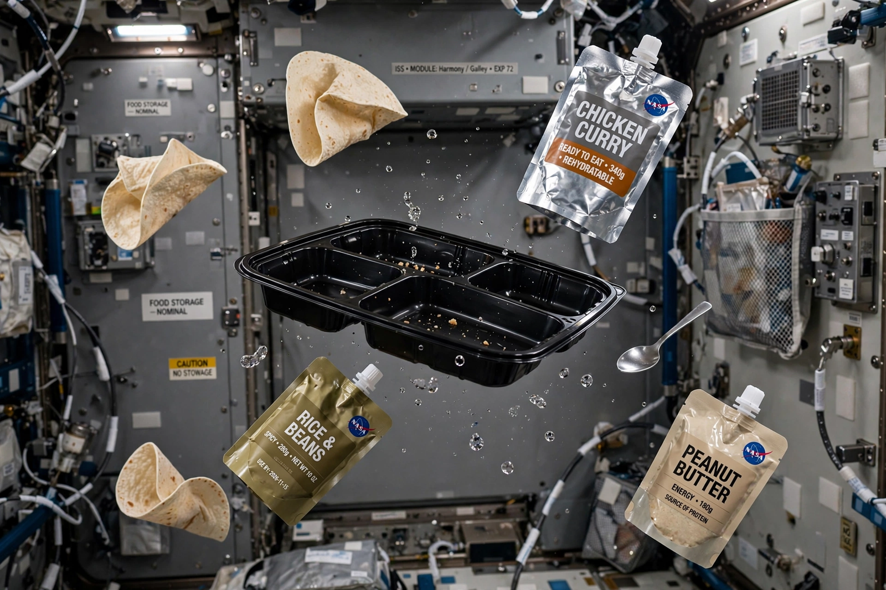

Space food
From Wikipedia, the free encyclopedia
| Space food | |
|---|---|
| Early forms | Tubes (USSR), squeeze tubes and cubes (Mercury/Gemini) |
| Modern | Thermo-stabilised, freeze-dried and fresh-supply items |
| Facilities | Food labs at Johnson Space Center and Star City |

Dinner aboard the ISS.Space food is the specially produced and packaged food flown for consumption in spaceflight. Its history tracks the programmes: Yuri Gagarin ate from tubes (beef and chocolate pastes) in 1961; Mercury astronauts endured cubes and tubes they despised; Gemini added freeze-dried items rehydrated with a water gun; Apollo got 'spoon-bowl' packs and, on Apollo 8, a famous Christmas dinner of thermostabilised turkey and gravy. The Space Shuttle brought a galley and near-normal trays; the International Space Station runs a multinational menu on roughly nine-day cycles, with bonus containers of crew-chosen items.
The constraints are unglamorous: crumbs become floating hazards (hence tortillas instead of bread), salt and spices drift (hence liquid salt and pepper), taste dulls in fluid-shifted heads (hence crews' famous cravings for hot sauce), and everything must survive months at ambient temperature with mass and trash minimised.
Signature items
Tang — a commercial drink mix flown on Gemini — became so associated with spaceflight its makers advertised on it for decades (much to Buzz Aldrin's later, colourful annoyance). The corned-beef sandwich John Young smuggled aboard Gemini 3 in 1965 triggered a congressional inquiry and, indirectly, crumb-control rules ever since. Fresh food — fruit, vegetables, the chilies and lettuces grown aboard the ISS itself — is the modern morale frontier.
See also
International Space Station · John Glenn · John Young (astronaut) · Space tourism